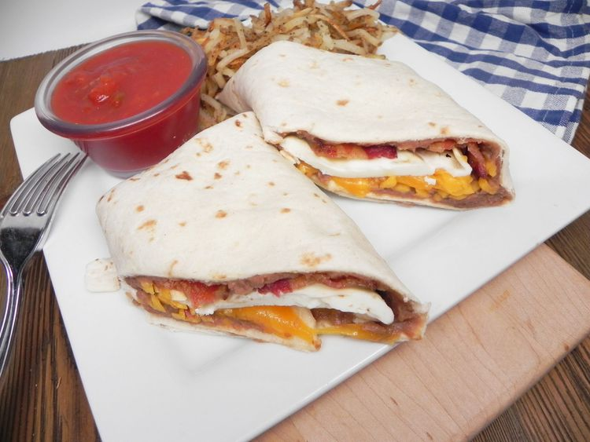

Breakfast Burritos

Breakfast burritos taken from the Allrecipes site. Submitted by JANINARAI.
Ingredients
- 1 lb bacon
- 10 eggs
- 16 oz can refried beans
- 8 oz shredded Cheddar cheese
- 10 inch flour tortillas
Steps
- Place bacon in a large, deep skillet. Cook over medium-high heat until evenly brown. Drain, and set aside.
- Wrap tortillas in foil and warm them in the oven.
- Fry eggs in a greased skillet until firm.
- Heat refried beans in a small saucepan.
- Top each tortilla with refried beans, 2 strips of bacons, 1 egg, and a little cheese. Roll tortillas into burritos and serve.
Tip: Ham or sausage may be substituted for bacon.
Home